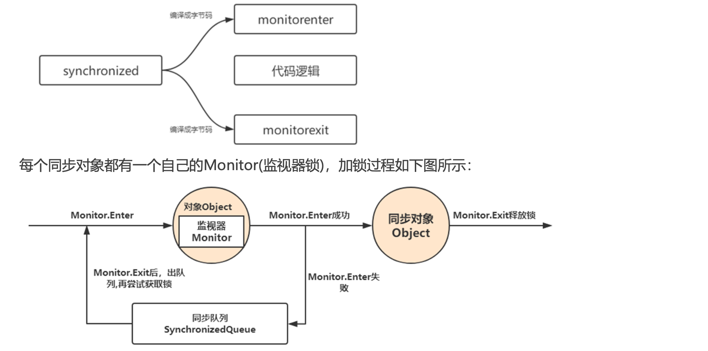
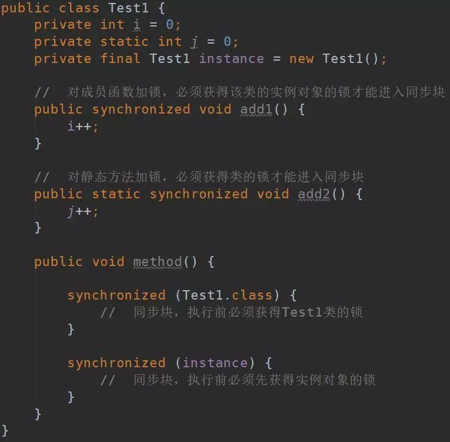
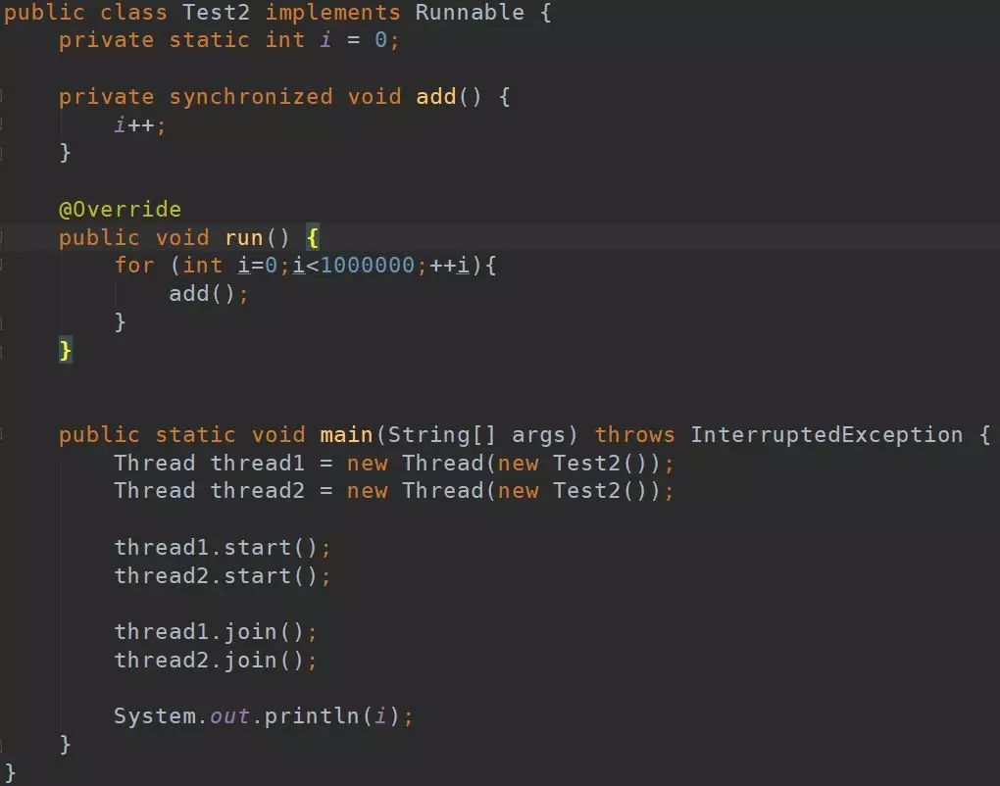
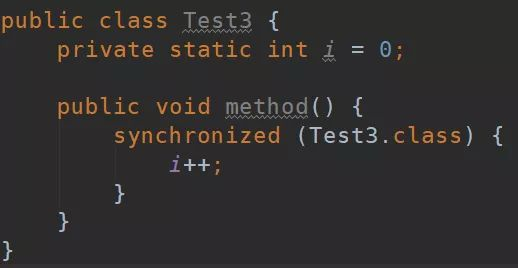
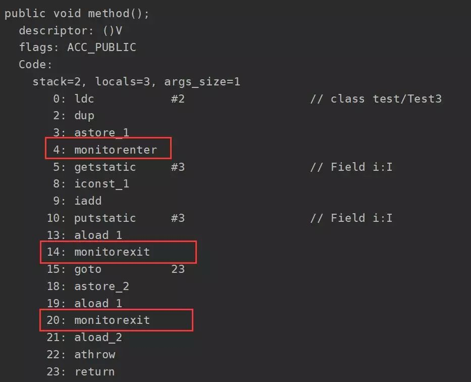
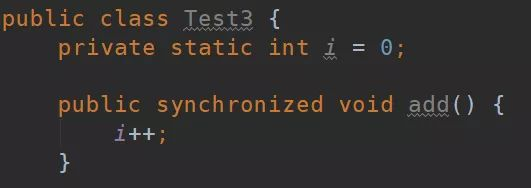
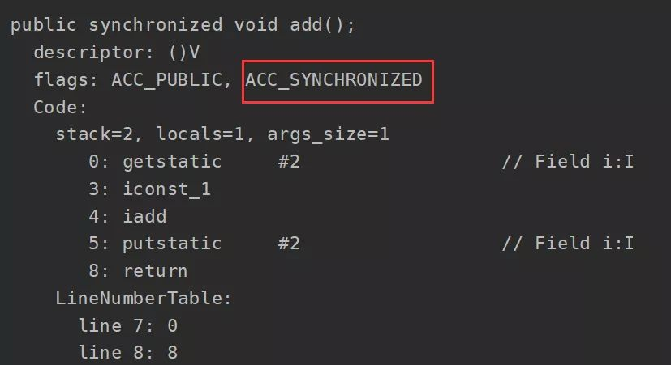
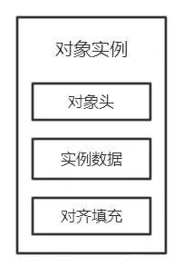
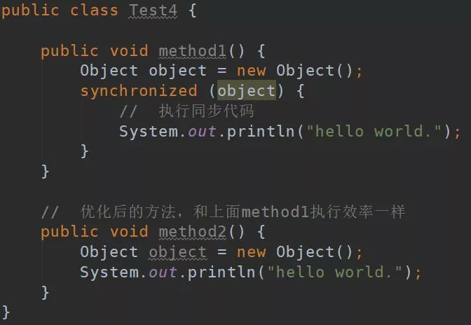
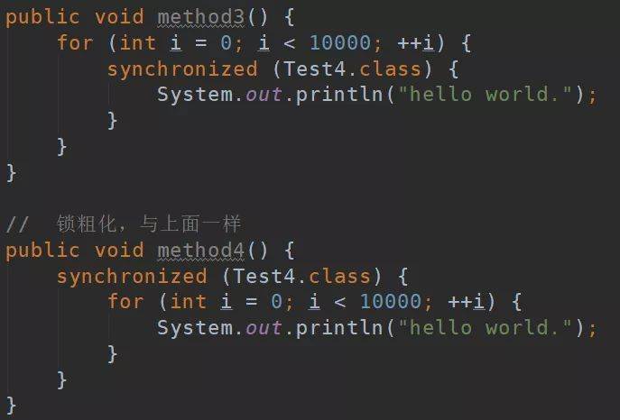

<!DOCTYPE html>


<html lang="zh-CN">


<head>
  <meta charset="utf-8" />
    
  <meta name="viewport" content="width=device-width, initial-scale=1, maximum-scale=1" />
  <title>
    synchronized详解 |  
  </title>
  <meta name="generator" content="hexo-theme-ayer">
  
  <link rel="shortcut icon" href="/favicon.ico" />
  
  
<link rel="stylesheet" href="/dist/main.css">

  
<link rel="stylesheet" href="https://cdn.jsdelivr.net/gh/Shen-Yu/cdn/css/remixicon.min.css">

  
<link rel="stylesheet" href="/css/custom.css">

  
  
<script src="https://cdn.jsdelivr.net/npm/pace-js@1.0.2/pace.min.js"></script>

  
  

  

</head>

</html>

<body>
  <div id="app">
    
      
    <main class="content on">
      <section class="outer">
  <article
  id="post-synchronized详解"
  class="article article-type-post"
  itemscope
  itemprop="blogPost"
  data-scroll-reveal
>
  <div class="article-inner">
    
    <header class="article-header">
       
<h1 class="article-title sea-center" style="border-left:0" itemprop="name">
  synchronized详解
</h1>
 

    </header>
     
    <div class="article-meta">
      <a href="/2020/09/08/synchronized%E8%AF%A6%E8%A7%A3/" class="article-date">
  <time datetime="2020-09-08T07:30:10.000Z" itemprop="datePublished">2020-09-08</time>
</a>   
<div class="word_count">
    <span class="post-time">
        <span class="post-meta-item-icon">
            <i class="ri-quill-pen-line"></i>
            <span class="post-meta-item-text"> 字数统计:</span>
            <span class="post-count">4.5k</span>
        </span>
    </span>

    <span class="post-time">
        &nbsp; | &nbsp;
        <span class="post-meta-item-icon">
            <i class="ri-book-open-line"></i>
            <span class="post-meta-item-text"> 阅读时长≈</span>
            <span class="post-count">15 分钟</span>
        </span>
    </span>
</div>
 
    </div>
      
    <div class="tocbot"></div>


  
    <div class="article-entry" itemprop="articleBody">
       
  <h2 id="synchronized详解"><a href="#synchronized详解" class="headerlink" title="synchronized详解"></a>synchronized详解</h2><h3 id="设计同步器的意义"><a href="#设计同步器的意义" class="headerlink" title="设计同步器的意义"></a>设计同步器的意义</h3><p>多线程编程中，有可能会出现多个线程同时访问同一个共享、可变资源的情况，这个资源我们称之其为临界资源;这种资源可能是:</p>
<p>对象、变量、文件等。</p>
<figure class="highlight plain"><table><tr><td class="gutter"><pre><span class="line">1</span><br><span class="line">2</span><br></pre></td><td class="code"><pre><span class="line">共享:资源可以由多个线程同时访问</span><br><span class="line">可变:资源可以在其生命周期内被修改</span><br></pre></td></tr></table></figure>

<p>引出的问题: 由于线程执行的过程是不可控的，所以需要采用同步机制来协同对对象可变状态的访问!</p>
<a id="more"></a>

<h4 id="如何解决线程并发安全问题"><a href="#如何解决线程并发安全问题" class="headerlink" title="如何解决线程并发安全问题?"></a>如何解决线程并发安全问题?</h4><p>实际上，所有的并发模式在解决线程安全问题时，采用的方案都是序列化访问临界资源。即在同一时刻，只能有一个线程访问临界资源，也称作同步互斥访问。<br> Java 中，提供了两种方式来实现同步互斥访问:<strong>synchronized</strong> 和 <strong>Lock</strong></p>
<p><strong>同步器的本质就是加锁</strong><br> <strong>加锁目的:序列化访问临界资源</strong>，即同一时刻只能有一个线程访问临界资源(<strong>同步互斥访问</strong>) 不过有一点需要区别的是:当多个线程执行一个方法时，该方法内部的局部变量并不是临界资源，因为这些局部变量是在每个线程的 私有栈中，因此不具有共享性，不会导致线程安全问题。</p>
<h3 id="synchronized原理详解"><a href="#synchronized原理详解" class="headerlink" title="synchronized原理详解"></a>synchronized原理详解</h3><p>synchronized内置锁是一种对象锁(锁的是对象而非引用)，作用粒度是对象，可以用来实现对临界资源的同步互斥访问，是可重入的。 加锁的方式:</p>
<p>1、同步实例方法，锁是当前实例对象 </p>
<p>2、同步类方法，锁是当前类对象 3、同步代码块，锁是括号里面的对象</p>
<h3 id="synchronized底层原理"><a href="#synchronized底层原理" class="headerlink" title="synchronized底层原理"></a>synchronized底层原理</h3><p><strong>synchronized是基于JVM内置锁</strong>实现，通过内部对象<strong>Monitor</strong>(监视器锁)实现，基于进入与退出Monitor对象实现方法与代码块同步，监视器锁的实现依赖底层操作系统的Mutex lock(互斥锁)实现，它是一个重量级锁性能较低。当然，<strong>JVM内置锁在1.5 之后版本</strong>做了重大的优化，如锁粗化(Lock Coarsening)、锁消除(Lock Elimination)、轻量级锁(Lightweight Locking)、</p>
<p>偏向锁(Biased Locking)、适应性自旋(Adaptive Spinning)等技术来减少锁操作的开销，，内置锁的并发性能已经基本与 Lock持平。</p>
<p>synchronized关键字被编译成字节码后会被翻译成<strong>monitorenter</strong> 和 <strong>monitorexit</strong> 两条指令分别在同步块逻辑代码的起始位置 与结束位置。</p>
<p></p>
<h1 id="一、synchronized的特性"><a href="#一、synchronized的特性" class="headerlink" title="一、synchronized的特性"></a><strong>一、synchronized的特性</strong></h1><h2 id="1-1-原子性"><a href="#1-1-原子性" class="headerlink" title="1.1 原子性"></a><strong>1.1 原子性</strong></h2><p><strong>所谓原子性就是指一个操作或者多个操作，要么全部执行并且执行的过程不会被任何因素打断，要么就都不执行。</strong></p>
<p>在Java中，对基本数据类型的变量的读取和赋值操作是原子性操作，即这些操作是不可被中断的，要么执行，要么不执行。但是像i++、i+=1等操作字符就不是原子性的，它们是分成<strong>读取、计算、赋值</strong>几步操作，原值在这些步骤还没完成时就可能已经被赋值了，那么最后赋值写入的数据就是脏数据，无法保证原子性。</p>
<p>被synchronized修饰的类或对象的所有操作都是原子的，因为在执行操作之前必须先获得类或对象的锁，直到执行完才能释放，这中间的过程无法被中断（除了已经废弃的stop()方法），即保证了原子性。</p>
<p><strong>注意！面试时经常会问比较synchronized和volatile，它们俩特性上最大的区别就在于原子性，volatile不具备原子性。</strong></p>
<h2 id="1-2-可见性"><a href="#1-2-可见性" class="headerlink" title="1.2 可见性"></a><strong>1.2 可见性</strong></h2><p><strong>可见性是指多个线程访问一个资源时，该资源的状态、值信息等对于其他线程都是可见的。</strong></p>
<p>synchronized和volatile都具有可见性，其中synchronized对一个类或对象加锁时，一个线程如果要访问该类或对象必须先获得它的锁，而这个锁的状态对于其他任何线程都是可见的，并且在释放锁之前会将对变量的修改刷新到主存当中，保证资源变量的可见性，如果某个线程占用了该锁，其他线程就必须在锁池中等待锁的释放。</p>
<p>而volatile的实现类似，被volatile修饰的变量，每当值需要修改时都会立即更新主存，主存是共享的，所有线程可见，所以确保了其他线程读取到的变量永远是最新值，保证可见性。</p>
<h2 id="1-3-有序性"><a href="#1-3-有序性" class="headerlink" title="1.3 有序性"></a><strong>1.3 有序性</strong></h2><p><strong>有序性值程序执行的顺序按照代码先后执行。</strong></p>
<p>synchronized和volatile都具有有序性，Java允许编译器和处理器对指令进行重排，但是指令重排并不会影响单线程的顺序，它影响的是多线程并发执行的顺序性。synchronized保证了每个时刻都只有一个线程访问同步代码块，也就确定了线程执行同步代码块是分先后顺序的，保证了有序性。</p>
<h2 id="1-4-可重入性"><a href="#1-4-可重入性" class="headerlink" title="1.4 可重入性"></a><strong>1.4 可重入性</strong></h2><p>synchronized和ReentrantLock都是可重入锁。当一个线程试图操作一个由其他线程持有的对象锁的临界资源时，将会处于阻塞状态，但当一个线程再次请求自己持有对象锁的临界资源时，这种情况属于重入锁。通俗一点讲就是说一个线程拥有了锁仍然还可以重复申请锁。</p>
<h1 id="二、synchronized的用法"><a href="#二、synchronized的用法" class="headerlink" title="二、synchronized的用法"></a><strong>二、synchronized的用法</strong></h1><p>synchronized可以修饰静态方法、成员函数，同时还可以直接定义代码块，但是归根结底它上锁的资源只有两类：一个是<strong>对象</strong>，一个是<strong>类</strong>。</p>
<p>先看看下面的代码（初学者看到先不要晕，后面慢慢讲解）：</p>
<p></p>
<p>首先我们知道被<code>static</code>修饰的静态方法、静态属性都是归类所有，同时该类的所有实例对象都可以访问。但是普通成员属性、成员方法是归实例化的对象所有，必须实例化之后才能访问，这也是为什么静态方法不能访问非静态属性的原因。我们明确了这些属性、方法归哪些所有之后就可以理解上面几个synchronized的锁到底是加给谁的了。</p>
<p>首先看第一个synchronized所加的方法是<code>add1()</code>，该方法没有被<code>static</code>修饰，也就是说该方法是归实例化的对象所有，那么这个锁就是加给Test1类所实例化的对象。</p>
<p>然后是<code>add2()</code>方法，该方法是静态方法，归Test1类所有，所以这个锁是加给Test1类的。</p>
<p>最后是<code>method()</code>方法中两个同步代码块，第一个代码块所锁定的是<code>Test1.class</code>，通过字面意思便知道该锁是加给Test1类的，而下面那个锁定的是<code>instance</code>，这个instance是Test1类的一个实例化对象，自然它所上的锁是给instance实例化对象的。</p>
<p>弄清楚这些锁是上给谁的就应该很容易懂synchronized的使用啦，只要记住要进入同步方法或同步块必须先获得相应的锁才行。那么我下面再列举出一个非常容易进入误区的代码，看看你是否真的理解了上面的解释。</p>
<p></p>
<p>上面的简单意思就是用两个线程分别对i加100万次，理论结果应该是200万，而且我还加了synchronized锁住了add方法，保证了其线程安全性。可是！！！我无论运行多少次都是小于200万的，为什么呢？</p>
<p>原因就在于synchronized加锁的函数，这个方法是普通成员方法，那么锁就是加给对象的，但是<strong>在创建线程时却new了两个Test2实例，也就是说这个锁是给这两个实例加的锁，并没有达到同步的效果</strong>，所以才会出现错误。</p>
<h1 id="三、synchronized锁的实现"><a href="#三、synchronized锁的实现" class="headerlink" title="三、synchronized锁的实现"></a><strong>三、synchronized锁的实现</strong></h1><p>synchronized有两种形式上锁，一个是对方法上锁，一个是构造同步代码块。他们的底层实现其实都一样，在进入同步代码之前先获取锁，获取到锁之后锁的计数器+1，同步代码执行完锁的计数器-1，如果获取失败就阻塞式等待锁的释放。只是他们在同步块识别方式上有所不一样，从class字节码文件可以表现出来，一个是通过方法flags标志，一个是monitorenter和monitorexit指令操作。</p>
<h2 id="3-1-同步方法"><a href="#3-1-同步方法" class="headerlink" title="3.1 同步方法"></a><strong>3.1 同步方法</strong></h2><p>首先来看在方法上上锁，我们就新定义一个同步方法然后进行反编译，查看其字节码：</p>
<p></p>
<p></p>
<p>可以看到在add方法的flags里面多了一个<code>ACC_SYNCHRONIZED</code>标志，这标志用来告诉JVM这是一个同步方法，在进入该方法之前先获取相应的锁，锁的计数器加1，方法结束后计数器-1，如果获取失败就阻塞住，知道该锁被释放。</p>
<h2 id="3-2-同步代码块"><a href="#3-2-同步代码块" class="headerlink" title="3.2 同步代码块"></a><strong>3.2 同步代码块</strong></h2><p>我们新定义一个同步代码块，编译出class字节码，然后找到method方法所在的指令块，可以清楚的看到其实现上锁和释放锁的过程，截图如下：</p>
<p></p>
<p></p>
<p>从反编译的同步代码块可以看到同步块是由monitorenter指令进入，然后monitorexit释放锁，在执行monitorenter之前需要尝试获取锁，如果这个对象没有被锁定，或者当前线程已经拥有了这个对象的锁，那么就把锁的计数器加1。当执行monitorexit指令时，锁的计数器也会减1。当获取锁失败时会被阻塞，一直等待锁被释放。</p>
<p>但是为什么会有两个monitorexit呢？其实第二个monitorexit是来处理异常的，仔细看反编译的字节码，正常情况下第一个monitorexit之后会执行<code>goto</code>指令，而该指令转向的就是23行的<code>return</code>，也就是说正常情况下只会执行第一个monitorexit释放锁，然后返回。而如果在执行中发生了异常，第二个monitorexit就起作用了，它是由编译器自动生成的，在发生异常时处理异常然后释放掉锁。</p>
<h1 id="四、synchronized锁的底层实现"><a href="#四、synchronized锁的底层实现" class="headerlink" title="四、synchronized锁的底层实现"></a><strong>四、synchronized锁的底层实现</strong></h1><p>在理解锁实现原理之前先了解一下Java的对象头和Monitor，在JVM中，对象是分成三部分存在的：对象头、实例数据、对其填充。</p>
<p></p>
<p>实例数据和对其填充与synchronized无关，这里简单说一下（我也是阅读《深入理解Java虚拟机》学到的，读者可仔细阅读该书相关章节学习）。<strong>实例数据</strong>存放类的属性数据信息，包括父类的属性信息，如果是数组的实例部分还包括数组的长度，这部分内存按4字节对齐；<strong>对其填充</strong>不是必须部分，由于虚拟机要求对象起始地址必须是8字节的整数倍，对齐填充仅仅是为了使字节对齐。</p>
<p>对象头是我们需要关注的重点，它是synchronized实现锁的基础，因为synchronized申请锁、上锁、释放锁都与对象头有关。对象头主要结构是由<code>Mark Word</code> 和 <code>Class Metadata Address</code>组成，<strong>其中</strong><code>**Mark Word**</code><strong>存储对象的hashCode、锁信息或分代年龄或GC标志等信息</strong>，<code>**Class Metadata Address**</code><strong>是类型指针指向对象的类元数据，JVM通过该指针确定该对象是哪个类的实例</strong>。</p>
<p>锁也分不同状态，JDK6之前只有两个状态：无锁、有锁（重量级锁），而在JDK6之后对synchronized进行了优化，新增了两种状态，总共就是四个状态：<strong>无锁状态、偏向锁、轻量级锁、重量级锁</strong>，其中无锁就是一种状态了。锁的类型和状态在对象头<code>Mark Word</code>中都有记录，在申请锁、锁升级等过程中JVM都需要读取对象的<code>Mark Word</code>数据。</p>
<p>每一个锁都对应一个monitor对象，在HotSpot虚拟机中它是由ObjectMonitor实现的（C++实现）。每个对象都存在着一个monitor与之关联，对象与其monitor之间的关系有存在多种实现方式，如monitor可以与对象一起创建销毁或当线程试图获取对象锁时自动生成，但当一个monitor被某个线程持有后，它便处于锁定状态。</p>
<figure class="highlight javascript"><table><tr><td class="gutter"><pre><span class="line">1</span><br><span class="line">2</span><br><span class="line">3</span><br><span class="line">4</span><br><span class="line">5</span><br><span class="line">6</span><br><span class="line">7</span><br><span class="line">8</span><br><span class="line">9</span><br><span class="line">10</span><br><span class="line">11</span><br><span class="line">12</span><br><span class="line">13</span><br><span class="line">14</span><br><span class="line">15</span><br><span class="line">16</span><br><span class="line">17</span><br><span class="line">18</span><br></pre></td><td class="code"><pre><span class="line">ObjectMonitor() &#123;</span><br><span class="line">    _header       = NULL;</span><br><span class="line">    _count        = <span class="number">0</span>;  <span class="comment">//锁计数器</span></span><br><span class="line">    _waiters      = <span class="number">0</span>,</span><br><span class="line">    _recursions   = <span class="number">0</span>;</span><br><span class="line">    _object       = NULL;</span><br><span class="line">    _owner        = NULL;</span><br><span class="line">    _WaitSet      = NULL; <span class="comment">//处于wait状态的线程，会被加入到_WaitSet</span></span><br><span class="line">    _WaitSetLock  = <span class="number">0</span> ;</span><br><span class="line">    _Responsible  = NULL ;</span><br><span class="line">    _succ         = NULL ;</span><br><span class="line">    _cxq          = NULL ;</span><br><span class="line">    FreeNext      = NULL ;</span><br><span class="line">    _EntryList    = NULL ; <span class="comment">//处于等待锁block状态的线程，会被加入到该列表</span></span><br><span class="line">    _SpinFreq     = <span class="number">0</span> ;</span><br><span class="line">    _SpinClock    = <span class="number">0</span> ;</span><br><span class="line">    OwnerIsThread = <span class="number">0</span> ;</span><br><span class="line">  &#125;</span><br></pre></td></tr></table></figure>

<blockquote>
<p>该段摘自：<a href="https://blog.csdn.net/javazejian/article/details/72828483" target="_blank" rel="noopener">https://blog.csdn.net/javazejian/article/details/72828483</a>  ObjectMonitor中有两个队列_WaitSet和_EntryList，用来保存ObjectWaiter对象列表(每个等待锁的线程都会被封装ObjectWaiter对象)，_owner指向持有ObjectMonitor对象的线程，当多个线程同时访问一段同步代码时，首先会进入_EntryList 集合，当线程获取到对象的monitor 后进入 _Owner 区域并把monitor中的owner变量设置为当前线程同时monitor中的计数器count加1，若线程调用 wait() 方法，将释放当前持有的monitor，owner变量恢复为null，count自减1，同时该线程进入 WaitSe t集合中等待被唤醒。若当前线程执行完毕也将释放monitor(锁)并复位变量的值，以便其他线程进入获取monitor(锁)。  monitor对象存在于每个Java对象的对象头中(存储的指针的指向)，synchronized锁便是通过这种方式获取锁的，也是为什么Java中任意对象可以作为锁的原因，同时也是notify/notifyAll/wait等方法存在于顶级对象Object中的原因(关于这点稍后还会进行分析)</p>
</blockquote>
<h1 id="五、JVM对synchronized的优化"><a href="#五、JVM对synchronized的优化" class="headerlink" title="五、JVM对synchronized的优化"></a><strong>五、JVM对synchronized的优化</strong></h1><p>从最近几个jdk版本中可以看出，Java的开发团队一直在对synchronized优化，其中最大的一次优化就是在jdk6的时候，新增了两个锁状态，通过锁消除、锁粗化、自旋锁等方法使用各种场景，给synchronized性能带来了很大的提升。</p>
<h2 id="5-1-锁膨胀"><a href="#5-1-锁膨胀" class="headerlink" title="5.1 锁膨胀"></a><strong>5.1 锁膨胀</strong></h2><p>上面讲到锁有四种状态，并且会因实际情况进行膨胀升级，其膨胀方向是：<strong>无锁——&gt;偏向锁——&gt;轻量级锁——&gt;重量级锁</strong>，并且膨胀方向不可逆。</p>
<h3 id="5-1-1-偏向锁"><a href="#5-1-1-偏向锁" class="headerlink" title="5.1.1 偏向锁"></a><strong>5.1.1 偏向锁</strong></h3><p>一句话总结它的作用：<strong>减少统一线程获取锁的代价</strong>。在大多数情况下，锁不存在多线程竞争，总是由同一线程多次获得，那么此时就是偏向锁。</p>
<p><strong>核心思想：</strong></p>
<p>如果一个线程获得了锁，那么锁就进入偏向模式，此时<code>Mark Word</code>的结构也就变为偏向锁结构，<strong>当该线程再次请求锁时，无需再做任何同步操作，即获取锁的过程只需要检查</strong><code>**Mark Word**</code><strong>的锁标记位为偏向锁以及当前线程ID等于</strong><code>**Mark Word**</code><strong>的ThreadID即可</strong>，这样就省去了大量有关锁申请的操作。</p>
<h3 id="5-1-2-轻量级锁"><a href="#5-1-2-轻量级锁" class="headerlink" title="5.1.2 轻量级锁"></a><strong>5.1.2 轻量级锁</strong></h3><p>轻量级锁是由偏向锁升级而来，当存在第二个线程申请同一个锁对象时，偏向锁就会立即升级为轻量级锁。注意这里的第二个线程只是申请锁，不存在两个线程同时竞争锁，可以是一前一后地交替执行同步块。</p>
<h3 id="5-1-3-重量级锁"><a href="#5-1-3-重量级锁" class="headerlink" title="5.1.3 重量级锁"></a><strong>5.1.3 重量级锁</strong></h3><p>重量级锁是由轻量级锁升级而来，当<strong>同一时间</strong>有多个线程竞争锁时，锁就会被升级成重量级锁，此时其申请锁带来的开销也就变大。</p>
<p>重量级锁一般使用场景会在追求吞吐量，同步块或者同步方法执行时间较长的场景。</p>
<h2 id="5-2-锁消除"><a href="#5-2-锁消除" class="headerlink" title="5.2 锁消除"></a><strong>5.2 锁消除</strong></h2><p>消除锁是虚拟机另外一种锁的优化，这种优化更彻底，在JIT编译时，对运行上下文进行扫描，去除不可能存在竞争的锁。比如下面代码的method1和method2的执行效率是一样的，因为object锁是私有变量，不存在所得竞争关系。</p>
<p></p>
<h2 id="5-3-锁粗化"><a href="#5-3-锁粗化" class="headerlink" title="5.3 锁粗化"></a><strong>5.3 锁粗化</strong></h2><p>锁粗化是虚拟机对另一种极端情况的优化处理，通过扩大锁的范围，避免反复加锁和释放锁。比如下面method3经过锁粗化优化之后就和method4执行效率一样了。</p>
<p></p>
<h2 id="5-4-自旋锁与自适应自旋锁"><a href="#5-4-自旋锁与自适应自旋锁" class="headerlink" title="5.4 自旋锁与自适应自旋锁"></a><strong>5.4 自旋锁与自适应自旋锁</strong></h2><p>轻量级锁失败后，虚拟机为了避免线程真实地在操作系统层面挂起，还会进行一项称为自旋锁的优化手段。</p>
<p>自旋锁：许多情况下，共享数据的锁定状态持续时间较短，切换线程不值得，通过让线程执行循环等待锁的释放，不让出CPU。如果得到锁，就顺利进入临界区。如果还不能获得锁，那就会将线程在操作系统层面挂起，这就是自旋锁的优化方式。但是它也存在缺点：如果锁被其他线程长时间占用，一直不释放CPU，会带来许多的性能开销。</p>
<p><strong>自适应自旋锁</strong>：这种相当于是对上面自旋锁优化方式的进一步优化，它的自旋的次数不再固定，其自旋的次数由前一次在同一个锁上的自旋时间及锁的拥有者的状态来决定，这就解决了自旋锁带来的缺点。</p>
<p><code>本文分享自微信公众号 - 北风IT之路（beifengtz），作者：beifengtz</code></p>
<p><code>原文出处及转载信息见文内详细说明，如有侵权，请联系 yunjia_community@tencent.com 删除。</code></p>
<p><code>原始发表时间：2019-07-15</code></p>
 
      <!-- reward -->
      
      <div id="reword-out">
        <div id="reward-btn">
          打赏
        </div>
      </div>
      
    </div>
    

    <!-- copyright -->
    
    <div class="declare">
      <ul class="post-copyright">
        <li>
          <i class="ri-copyright-line"></i>
          <strong>版权声明： </strong>
          本博客所有文章除特别声明外，著作权归作者所有。转载请注明出处！
        </li>
      </ul>
    </div>
    
    <footer class="article-footer">
       
<div class="share-btn">
      <span class="share-sns share-outer">
        <i class="ri-share-forward-line"></i>
        分享
      </span>
      <div class="share-wrap">
        <i class="arrow"></i>
        <div class="share-icons">
          
          <a class="weibo share-sns" href="javascript:;" data-type="weibo">
            <i class="ri-weibo-fill"></i>
          </a>
          <a class="weixin share-sns wxFab" href="javascript:;" data-type="weixin">
            <i class="ri-wechat-fill"></i>
          </a>
          <a class="qq share-sns" href="javascript:;" data-type="qq">
            <i class="ri-qq-fill"></i>
          </a>
          <a class="douban share-sns" href="javascript:;" data-type="douban">
            <i class="ri-douban-line"></i>
          </a>
          <!-- <a class="qzone share-sns" href="javascript:;" data-type="qzone">
            <i class="icon icon-qzone"></i>
          </a> -->
          
          <a class="facebook share-sns" href="javascript:;" data-type="facebook">
            <i class="ri-facebook-circle-fill"></i>
          </a>
          <a class="twitter share-sns" href="javascript:;" data-type="twitter">
            <i class="ri-twitter-fill"></i>
          </a>
          <a class="google share-sns" href="javascript:;" data-type="google">
            <i class="ri-google-fill"></i>
          </a>
        </div>
      </div>
</div>

<div class="wx-share-modal">
    <a class="modal-close" href="javascript:;"><i class="ri-close-circle-line"></i></a>
    <p>扫一扫，分享到微信</p>
    <div class="wx-qrcode">
      
    </div>
</div>

<div id="share-mask"></div>  
  <ul class="article-tag-list" itemprop="keywords"><li class="article-tag-list-item"><a class="article-tag-list-link" href="/tags/java/" rel="tag">java</a></li><li class="article-tag-list-item"><a class="article-tag-list-link" href="/tags/%E5%90%8E%E7%AB%AF/" rel="tag">后端</a></li><li class="article-tag-list-item"><a class="article-tag-list-link" href="/tags/%E5%B9%B6%E5%8F%91%E7%BC%96%E7%A8%8B/" rel="tag">并发编程</a></li></ul>

    </footer>
  </div>

   
  <nav class="article-nav">
    
      <a href="/2020/09/08/JVM-%E7%B1%BB%E5%8A%A0%E8%BD%BD%E6%9C%BA%E5%88%B6%E6%B7%B1%E5%BA%A6%E5%89%96%E6%9E%90/" class="article-nav-link">
        <strong class="article-nav-caption">上一篇</strong>
        <div class="article-nav-title">
          
            JVM-类加载机制深度剖析
          
        </div>
      </a>
    
    
      <a href="/2020/09/08/CPU%E7%BC%93%E5%AD%98%E4%B8%80%E8%87%B4%E6%80%A7%E5%8D%8F%E8%AE%AEMESI/" class="article-nav-link">
        <strong class="article-nav-caption">下一篇</strong>
        <div class="article-nav-title">CPU缓存一致性协议MESI</div>
      </a>
    
  </nav>

   
<!-- valine评论 -->
<div id="vcomments-box">
  <div id="vcomments"></div>
</div>
<script src="//cdn1.lncld.net/static/js/3.0.4/av-min.js"></script>
<script src="https://cdn.jsdelivr.net/npm/valine@1.4.14/dist/Valine.min.js"></script>
<script>
  new Valine({
    el: "#vcomments",
    app_id: "",
    app_key: "",
    path: window.location.pathname,
    avatar: "monsterid",
    placeholder: "给我的文章加点评论吧~",
    recordIP: true,
  });
  const infoEle = document.querySelector("#vcomments .info");
  if (infoEle && infoEle.childNodes && infoEle.childNodes.length > 0) {
    infoEle.childNodes.forEach(function (item) {
      item.parentNode.removeChild(item);
    });
  }
</script>
<style>
  #vcomments-box {
    padding: 5px 30px;
  }

  @media screen and (max-width: 800px) {
    #vcomments-box {
      padding: 5px 0px;
    }
  }

  #vcomments-box #vcomments {
    background-color: #fff;
  }

  .v .vlist .vcard .vh {
    padding-right: 20px;
  }

  .v .vlist .vcard {
    padding-left: 10px;
  }
</style>

 
     
</article>

</section>
      <footer class="footer">
  <div class="outer">
    <ul>
      <li>
        Copyrights &copy;
        2015-2020
        <i class="ri-heart-fill heart_icon"></i> ldy
      </li>
    </ul>
    <ul>
      <li>
        
        
        
        由 <a href="https://hexo.io" target="_blank">Hexo</a> 强力驱动
        <span class="division">|</span>
        主题 - <a href="https://github.com/Shen-Yu/hexo-theme-ayer" target="_blank">Ayer</a>
        
      </li>
    </ul>
    <ul>
      <li>
        
        
        <span>
  <span><i class="ri-user-3-fill"></i>访问人数:<span id="busuanzi_value_site_uv"></span></s>
  <span class="division">|</span>
  <span><i class="ri-eye-fill"></i>浏览次数:<span id="busuanzi_value_page_pv"></span></span>
</span>
        
      </li>
    </ul>
    <ul>
      
    </ul>
    <ul>
      
    </ul>
    <ul>
      <li>
        <!-- cnzz统计 -->
        
        <script type="text/javascript" src='https://s9.cnzz.com/z_stat.php?id=1278069914&amp;web_id=1278069914'></script>
        
      </li>
    </ul>
  </div>
</footer>
      <div class="float_btns">
        <div class="totop" id="totop">
  <i class="ri-arrow-up-line"></i>
</div>

<div class="todark" id="todark">
  <i class="ri-moon-line"></i>
</div>

      </div>
    </main>
    <aside class="sidebar on">
      <button class="navbar-toggle"></button>
<nav class="navbar">
  
  <div class="logo">
    <a href="/"></a>
  </div>
  
  <ul class="nav nav-main">
    
    <li class="nav-item">
      <a class="nav-item-link" href="/">主页</a>
    </li>
    
    <li class="nav-item">
      <a class="nav-item-link" href="/archives">归档</a>
    </li>
    
    <li class="nav-item">
      <a class="nav-item-link" href="/categories">分类</a>
    </li>
    
    <li class="nav-item">
      <a class="nav-item-link" href="/tags">标签</a>
    </li>
    
    <li class="nav-item">
      <a class="nav-item-link" href="/tags/%E6%97%85%E8%A1%8C/">旅行</a>
    </li>
    
    <li class="nav-item">
      <a class="nav-item-link" href="http://shenyu-vip.lofter.com" target="_blank" rel="noopener">摄影</a>
    </li>
    
    <li class="nav-item">
      <a class="nav-item-link" href="/friends">友链</a>
    </li>
    
    <li class="nav-item">
      <a class="nav-item-link" href="/2019/about">关于我</a>
    </li>
    
  </ul>
</nav>
<nav class="navbar navbar-bottom">
  <ul class="nav">
    <li class="nav-item">
      
      <a class="nav-item-link nav-item-search"  title="搜索">
        <i class="ri-search-line"></i>
      </a>
      
      
      <a class="nav-item-link" target="_blank" href="/atom.xml" title="RSS Feed">
        <i class="ri-rss-line"></i>
      </a>
      
    </li>
  </ul>
</nav>
<div class="search-form-wrap">
  <div class="local-search local-search-plugin">
  <input type="search" id="local-search-input" class="local-search-input" placeholder="Search...">
  <div id="local-search-result" class="local-search-result"></div>
</div>
</div>
    </aside>
    <script>
      if (window.matchMedia("(max-width: 768px)").matches) {
        document.querySelector('.content').classList.remove('on');
        document.querySelector('.sidebar').classList.remove('on');
      }
    </script>
    <div id="mask"></div>

<!-- #reward -->
<div id="reward">
  <span class="close"><i class="ri-close-line"></i></span>
  <p class="reward-p"><i class="ri-cup-line"></i>请我喝杯咖啡吧~</p>
  <div class="reward-box">
    
    <div class="reward-item">
      
      <span class="reward-type">支付宝</span>
    </div>
    
    
    <div class="reward-item">
      
      <span class="reward-type">微信</span>
    </div>
    
  </div>
</div>
    
<script src="/js/jquery-2.0.3.min.js"></script>


<script src="/js/lazyload.min.js"></script>

<!-- Tocbot -->


<script src="/js/tocbot.min.js"></script>

<script>
  tocbot.init({
    tocSelector: '.tocbot',
    contentSelector: '.article-entry',
    headingSelector: 'h1, h2, h3, h4, h5, h6',
    hasInnerContainers: true,
    scrollSmooth: true,
    scrollContainer: 'main',
    positionFixedSelector: '.tocbot',
    positionFixedClass: 'is-position-fixed',
    fixedSidebarOffset: 'auto'
  });
</script>

<script src="https://cdn.jsdelivr.net/npm/jquery-modal@0.9.2/jquery.modal.min.js"></script>
<link rel="stylesheet" href="https://cdn.jsdelivr.net/npm/jquery-modal@0.9.2/jquery.modal.min.css">
<script src="https://cdn.jsdelivr.net/npm/justifiedGallery@3.7.0/dist/js/jquery.justifiedGallery.min.js"></script>

<script src="/dist/main.js"></script>

<!-- ImageViewer -->

<!-- Root element of PhotoSwipe. Must have class pswp. -->
<div class="pswp" tabindex="-1" role="dialog" aria-hidden="true">

    <!-- Background of PhotoSwipe. 
         It's a separate element as animating opacity is faster than rgba(). -->
    <div class="pswp__bg"></div>

    <!-- Slides wrapper with overflow:hidden. -->
    <div class="pswp__scroll-wrap">

        <!-- Container that holds slides. 
            PhotoSwipe keeps only 3 of them in the DOM to save memory.
            Don't modify these 3 pswp__item elements, data is added later on. -->
        <div class="pswp__container">
            <div class="pswp__item"></div>
            <div class="pswp__item"></div>
            <div class="pswp__item"></div>
        </div>

        <!-- Default (PhotoSwipeUI_Default) interface on top of sliding area. Can be changed. -->
        <div class="pswp__ui pswp__ui--hidden">

            <div class="pswp__top-bar">

                <!--  Controls are self-explanatory. Order can be changed. -->

                <div class="pswp__counter"></div>

                <button class="pswp__button pswp__button--close" title="Close (Esc)"></button>

                <button class="pswp__button pswp__button--share" style="display:none" title="Share"></button>

                <button class="pswp__button pswp__button--fs" title="Toggle fullscreen"></button>

                <button class="pswp__button pswp__button--zoom" title="Zoom in/out"></button>

                <!-- Preloader demo http://codepen.io/dimsemenov/pen/yyBWoR -->
                <!-- element will get class pswp__preloader--active when preloader is running -->
                <div class="pswp__preloader">
                    <div class="pswp__preloader__icn">
                        <div class="pswp__preloader__cut">
                            <div class="pswp__preloader__donut"></div>
                        </div>
                    </div>
                </div>
            </div>

            <div class="pswp__share-modal pswp__share-modal--hidden pswp__single-tap">
                <div class="pswp__share-tooltip"></div>
            </div>

            <button class="pswp__button pswp__button--arrow--left" title="Previous (arrow left)">
            </button>

            <button class="pswp__button pswp__button--arrow--right" title="Next (arrow right)">
            </button>

            <div class="pswp__caption">
                <div class="pswp__caption__center"></div>
            </div>

        </div>

    </div>

</div>

<link rel="stylesheet" href="https://cdn.jsdelivr.net/npm/photoswipe@4.1.3/dist/photoswipe.min.css">
<link rel="stylesheet" href="https://cdn.jsdelivr.net/npm/photoswipe@4.1.3/dist/default-skin/default-skin.min.css">
<script src="https://cdn.jsdelivr.net/npm/photoswipe@4.1.3/dist/photoswipe.min.js"></script>
<script src="https://cdn.jsdelivr.net/npm/photoswipe@4.1.3/dist/photoswipe-ui-default.min.js"></script>

<script>
    function viewer_init() {
        let pswpElement = document.querySelectorAll('.pswp')[0];
        let $imgArr = document.querySelectorAll(('.article-entry img:not(.reward-img)'))

        $imgArr.forEach(($em, i) => {
            $em.onclick = () => {
                // slider展开状态
                // todo: 这样不好，后面改成状态
                if (document.querySelector('.left-col.show')) return
                let items = []
                $imgArr.forEach(($em2, i2) => {
                    let img = $em2.getAttribute('data-idx', i2)
                    let src = $em2.getAttribute('data-target') || $em2.getAttribute('src')
                    let title = $em2.getAttribute('alt')
                    // 获得原图尺寸
                    const image = new Image()
                    image.src = src
                    items.push({
                        src: src,
                        w: image.width || $em2.width,
                        h: image.height || $em2.height,
                        title: title
                    })
                })
                var gallery = new PhotoSwipe(pswpElement, PhotoSwipeUI_Default, items, {
                    index: parseInt(i)
                });
                gallery.init()
            }
        })
    }
    viewer_init()
</script>

<!-- MathJax -->

<!-- Katex -->

<!-- busuanzi  -->


<script src="/js/busuanzi-2.3.pure.min.js"></script>


<!-- ClickLove -->

<!-- ClickBoom1 -->

<!-- ClickBoom2 -->

<!-- CodeCopy -->


<link rel="stylesheet" href="/css/clipboard.css">

<script src="https://cdn.jsdelivr.net/npm/clipboard@2/dist/clipboard.min.js"></script>
<script>
  function wait(callback, seconds) {
    var timelag = null;
    timelag = window.setTimeout(callback, seconds);
  }
  !function (e, t, a) {
    var initCopyCode = function(){
      var copyHtml = '';
      copyHtml += '<button class="btn-copy" data-clipboard-snippet="">';
      copyHtml += '<i class="ri-file-copy-2-line"></i><span>COPY</span>';
      copyHtml += '</button>';
      $(".highlight .code pre").before(copyHtml);
      $(".article pre code").before(copyHtml);
      var clipboard = new ClipboardJS('.btn-copy', {
        target: function(trigger) {
          return trigger.nextElementSibling;
        }
      });
      clipboard.on('success', function(e) {
        let $btn = $(e.trigger);
        $btn.addClass('copied');
        let $icon = $($btn.find('i'));
        $icon.removeClass('ri-file-copy-2-line');
        $icon.addClass('ri-checkbox-circle-line');
        let $span = $($btn.find('span'));
        $span[0].innerText = 'COPIED';
        
        wait(function () { // 等待两秒钟后恢复
          $icon.removeClass('ri-checkbox-circle-line');
          $icon.addClass('ri-file-copy-2-line');
          $span[0].innerText = 'COPY';
        }, 2000);
      });
      clipboard.on('error', function(e) {
        e.clearSelection();
        let $btn = $(e.trigger);
        $btn.addClass('copy-failed');
        let $icon = $($btn.find('i'));
        $icon.removeClass('ri-file-copy-2-line');
        $icon.addClass('ri-time-line');
        let $span = $($btn.find('span'));
        $span[0].innerText = 'COPY FAILED';
        
        wait(function () { // 等待两秒钟后恢复
          $icon.removeClass('ri-time-line');
          $icon.addClass('ri-file-copy-2-line');
          $span[0].innerText = 'COPY';
        }, 2000);
      });
    }
    initCopyCode();
  }(window, document);
</script>


<!-- CanvasBackground -->


    
  </div>
</body>

</html>